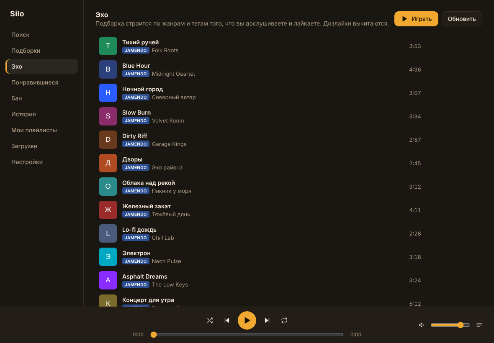
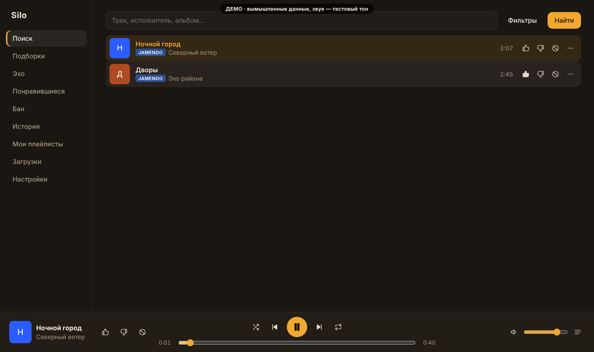
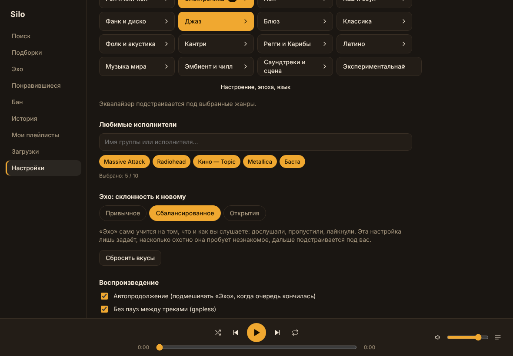

A calm, fast music player for your PC
Silo Player is a free, open-source desktop app that finds music across Jamendo, YouTube and SoundCloud, plays it in one place, and builds an endless personal radio called Echo that learns your taste. Your listening data never leaves your computer.



What it does
- One search across your downloads, Jamendo, YouTube and SoundCloud, with the source shown on every track.
- Echo: an endless stream that adapts to what you finish, like and skip, and loads the next tracks ahead of time.
- Playlist import from M3U, PLS, CSV and JSON files, plain text lists, and public YouTube, SoundCloud and Jamendo playlist links.
- Equalizer, gapless playback and crossfade for free-licensed music from Jamendo and your own files.
- Strict language filter, 7 themes, Russian and English interface.
How it uses YouTube
Silo Player uses the official YouTube Data API v3 only to search for videos and playlists, and plays them exclusively through the official YouTube IFrame Player API. It never downloads, extracts, or modifies YouTube audio or video, and it does not bypass any YouTube feature. Search results are cached on the user's own computer for up to 3 days to reduce API use. By using the YouTube features you agree to the YouTube Terms of Service; see our Privacy Policy and the Google Privacy Policy.
Your own API keys
Each user supplies their own free API keys (Jamendo, YouTube, SoundCloud). The app explains how to get them on first launch. Keys are stored only on the user's computer.
По-русски: Silo Player — бесплатный открытый музыкальный плеер для ПК. Все данные (история, оценки, плейлисты, ключи) хранятся только на вашем компьютере.